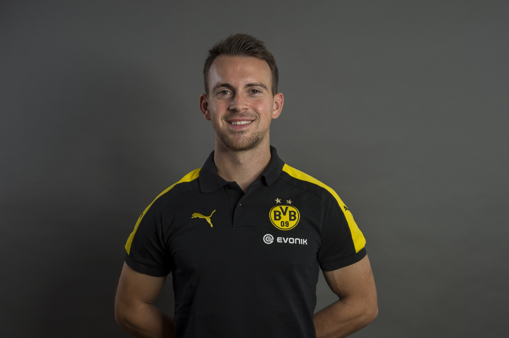
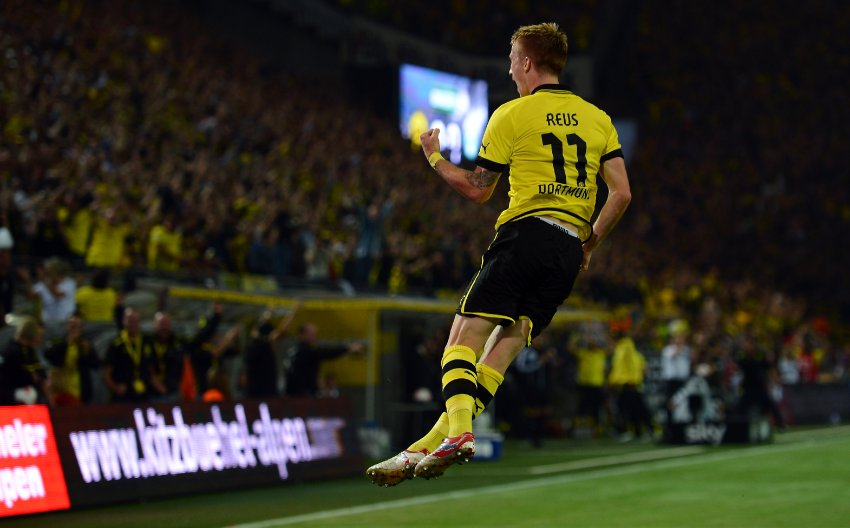
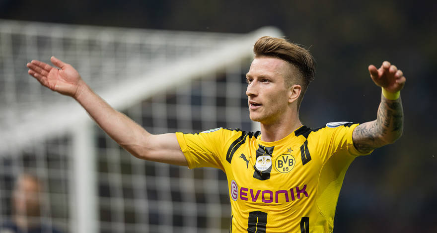
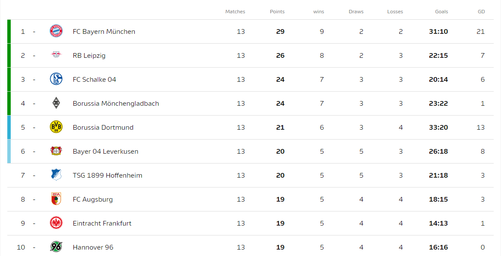

Skvelé správy priniesol fyzioterapeut Mike Muretic v sobotu večer. Muretic sa v predzápasovom rozhovore proti úhlavnému rivalovi, Schalke 04, vyjadril, že Marco Reus je už 100% pripravený zasiahnuť do stretnutia. Či ho však manažér Bozs využije, to nám už potvrdiť nemohol.

Mike Muretic, fyzioterapeut BVB
Práve Bosz sa vyjadril mimoriadne pochvalne na adresu Marca Reusa: "Marco je jedným z našich najdôležitejších hráčov. Vždy keď je na ihrisku šanca na skórovanie rapídne stúpa."
Trénerovi dávajú za pravdu aj štatistiky, veď Reusova bilancia je viac než skvostná. Za Dortmund odohral dosiaľ 189 zápasov a zaznamenal v nich 89 gólov. To je na záložníka skvelý priemer takmer 0.47 gólu na zápas. V aktuálnom kádri je na tom lepšie len gabonský ostrostrelec Pierre Emmerick Aubameyang.

Marco Reus, gólová oslava

Marco Reus, ako ho máme najradšej
Na zápasy proti Schalke má pritom Marco až neskutočnú smolu. Nepredstavil sa kvôli zraneniam v posledných 5 stretnutiach proti tomuto rivalovi. Naposledy proti nemu nastúpil 28.02.2015 a prispel vtedy gólom k pohodlnej výhre v pomere 3:0. Zostáva len dodať, že Marcovi prajeme pevné zdravie a Borussii či už s ním alebo bez neho 3 body v najbližšom zápase. Veď po zlých výkonoch v posledných zápasoch sa náš tím prepadol až na potupné 5.miesto. Teraz má ideálnu šancu napraviť si reputáciu.
Do toho, BVB09!

V bundesligovej tabuľke sme sa prepadli už na 5.miesto.